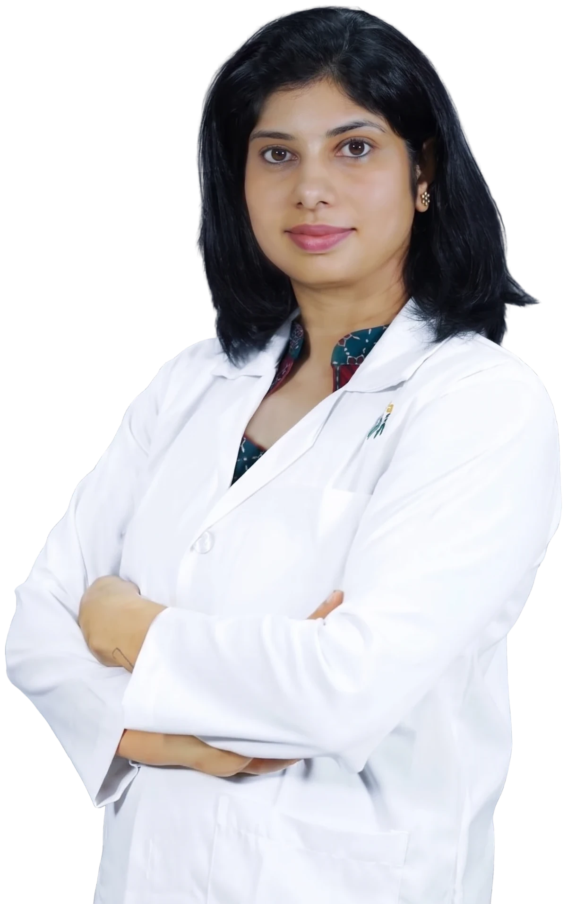

Bone Marrow Transplant in Bangalore
A bone marrow transplant (BMT), also called a stem cell transplant, replaces diseased or damaged bone marrow with healthy blood-forming stem cells. It can cure conditions like thalassemia, aplastic anemia and some leukemias, and helps control others like myeloma and lymphoma.

Overview
What is a bone marrow transplant?
Bone marrow is the soft, spongy tissue inside your bones. It contains stem cells that make all your blood cells. When the bone marrow is damaged by disease, or when high-dose treatment is needed to destroy a cancer, healthy stem cells can be given to rebuild it.
In a bone marrow transplant, healthy stem cells are given into a vein, much like a blood transfusion. It is not surgery. The stem cells travel to the bone marrow on their own and start making new red cells, white cells and platelets. This is called engraftment.
Dr. Neema Bhat, a US-trained hematologist and bone marrow transplant specialist with 10+ years of experience and 100+ transplants, offers bone marrow transplant in Bangalore for adults and children.
Where the stem cells come from
- Your own body (autologous transplant)
- A donor, such as a brother, sister, parent or an unrelated volunteer (allogeneic transplant)
Today, most stem cells are collected from the blood, not directly from the bone marrow. The term “bone marrow transplant” is still used for all types.
The need is large: India has about 1 to 1.5 lakh children with thalassemia major, and 10,000 to 15,000 more are born every year (Ministry of Health). For many of these children, a transplant is the only cure. Timely bone marrow transplant in Bangalore, done at the right stage of disease, gives the best chance of success.
Who needs it
Who needs a bone marrow transplant?
A bone marrow transplant may be advised for these conditions:
Blood cancers
- Acute myeloid leukemia (AML) and acute lymphoblastic leukemia (ALL), leukemia
- Chronic myeloid leukemia (CML) not controlled by other treatment
- Hodgkin and non-Hodgkin lymphoma that has relapsed or is high-risk
- Multiple myeloma
- Myelodysplastic syndromes (MDS) and myelofibrosis
Non-cancerous blood disorders
- Thalassemia major
- Sickle cell disease
- Severe aplastic anemia
- Other bone marrow failure syndromes, such as Fanconi anemia
Immune and inherited disorders, mostly in children
- Severe combined immunodeficiency (SCID) and other primary immunodeficiencies
- Chronic granulomatous disease (CGD)
- HLH (hemophagocytic lymphohistiocytosis)
- Some inherited metabolic disorders
Solid tumours (selected cases)
- Neuroblastoma in children
- Relapsed germ cell tumours
Not every patient with these conditions needs a transplant. The decision depends on the disease, its stage, how it responded to earlier treatment, your age and overall health, and whether a suitable donor is available. A transplant evaluation with a BMT specialist answers these questions.
Types
Types of bone marrow transplant
| Type | Where the stem cells come from | Mainly used for |
|---|---|---|
| Autologous transplant | Your own stem cells, collected and stored before high-dose treatment | Multiple myeloma, relapsed lymphoma, some solid tumours |
| Matched sibling donor (allogeneic) | A brother or sister with a full tissue (HLA) match | Thalassemia, aplastic anemia, leukemia, sickle cell disease |
| Matched unrelated donor (allogeneic) | An unrelated volunteer found through a stem cell donor registry | Leukemia, MDS, aplastic anemia, when no family match is available |
| Haploidentical (half-matched) | A parent, child, brother or sister who is a half match | Leukemia, aplastic anemia, thalassemia and others, when no full match is available |
| Cord blood transplant | Stem cells from a newborn’s umbilical cord, stored in a cord blood bank | Mainly children, in selected cases |
Myeloablative conditioning
Before a transplant, you receive conditioning treatment with chemotherapy, and sometimes radiation. Myeloablative (full-intensity) conditioning uses high doses to fully clear the bone marrow. It is mostly used for younger, fitter patients.
Reduced-intensity conditioning
Uses lower doses and relies more on the donor’s immune cells to fight the disease. It allows older patients or those with other health problems to have a transplant.
Finding a donor: HLA matching
For a donor transplant, the donor’s tissue type must match the patient’s. This is checked with a simple blood test or cheek swab called HLA typing (human leukocyte antigen typing).
- Brothers and sisters: each full sibling has a 1 in 4 chance of being a full match.
- Parents and children: are usually a half match, so they can be donors for a haploidentical transplant.
- Unrelated donors: can be searched in Indian and international stem cell donor registries.
A close match lowers the risk of rejection and graft-versus-host disease (GVHD). Thanks to newer methods, a half-matched family member is now a safe option for many patients who do not have a full match.
Is donating stem cells safe?
Yes. Most donors give stem cells from the blood, through a process called apheresis. The donor first gets a few days of injections to move stem cells into the blood. Blood is then drawn from one arm, the stem cells are separated by a machine, and the rest of the blood is returned through the other arm.
It takes about 4 to 6 hours and needs no surgery. The donor’s body replaces the stem cells within a few weeks.
The process
The transplant process, step by step
- 01Transplant evaluation
Blood tests, heart, lung, kidney and liver tests, imaging, infection screening and a dental check-up to make sure you are fit for transplant.
- 02Donor search and HLA typing
For donor transplants, family members are tested first, then registries if needed.
- 03Central line placement
A thin tube (catheter) is placed in a large vein in the chest to give medicines, blood and stem cells, and to take blood samples.
- 04Stem cell collection
Stem cells are collected from you (autologous) or from your donor, usually from the blood by apheresis.
- 05Conditioning
About 5 to 10 days of chemotherapy, sometimes with radiation, to clear the diseased marrow and prepare the body.
- 06Transplant day (Day 0)
The stem cells are given through the central line, like a blood transfusion. It usually takes less than an hour to a few hours.
- 07Engraftment
New stem cells start making blood cells in about 10 to 14 days after an autologous transplant and 2 to 4 weeks after a donor transplant. You stay in a clean, HEPA-filtered BMT room.
- 08Discharge
Once blood counts recover and you can eat and drink well, usually about 2 to 3 weeks for an autologous and 4 to 6 weeks for a donor transplant.
- 09Follow-up and recovery
Frequent visits in the first 100 days, then regular long-term check-ups.
Treatment
Bone marrow transplant treatment options
Treatment is planned around your disease, its stage, your age, your fitness and the donor available. Options include:
Autologous stem cell transplant
Your own stem cells are collected, stored and returned after high-dose chemotherapy.
Tandem (double) autologous transplant
Two planned autologous transplants a few months apart, for selected myeloma patients.
Matched sibling donor transplant
Stem cells from a fully matched brother or sister.
Matched unrelated donor transplant
Stem cells from a matched volunteer donor found through a registry.
Haploidentical (half-matched) transplant
Stem cells from a half-matched parent, child, brother or sister.
Cord blood transplant
Stem cells from stored umbilical cord blood, in selected cases.
Myeloablative conditioning
Full-intensity chemotherapy, with or without radiation, before transplant.
Reduced-intensity conditioning
Lower-dose conditioning for older patients or those with other health problems.
Total body irradiation (TBI)
Radiation to the whole body as part of conditioning, for selected conditions.
GVHD prevention and treatment
Immune-suppressing therapy to stop donor cells from attacking the patient’s body.
Donor lymphocyte infusion (DLI)
Extra immune cells from the donor to treat relapse or boost the donor’s cells.
Infection prevention
HEPA-filtered rooms, preventive antibiotics, antivirals and antifungals, and regular monitoring.
Blood and platelet transfusions
To support you until the new marrow starts working.
Nutrition support
A dietitian-planned diet, and feeding support if eating is difficult.
Vaccination after transplant
Childhood and adult vaccines are repeated, as the transplant resets the immune system.
Physiotherapy and rehabilitation
To rebuild strength and stamina.
Counselling and support
Psychological support for patients, donors and families through the transplant journey.
Long-term follow-up care
Checks for late effects on the heart, lungs, hormones, bones, eyes and fertility.
Risks
Risks and side effects of bone marrow transplant
A bone marrow transplant is a major treatment. Your transplant team watches closely for these risks and treats them early:
- Infections
The most common risk while blood counts are low, and for months after a donor transplant.
- Mouth sores, nausea, diarrhoea
From conditioning chemotherapy. These usually settle as counts recover.
- Low blood counts
You may need red cell and platelet transfusions until the new marrow works.
- Graft-versus-host disease (GVHD)
After a donor transplant, the donor’s immune cells may attack the skin, gut or liver. It is treated with immune-suppressing medicines.
- Graft failure
Rarely, the new stem cells do not engraft and further treatment is needed.
- Organ problems
Such as liver (veno-occlusive disease), kidney, lung or heart problems.
- Infertility
Conditioning can affect fertility. Ask about sperm, egg or embryo freezing before treatment.
- Relapse
The original disease may come back in some patients.
- Late effects
Cataracts, thyroid and hormone changes, bone thinning, and a small risk of second cancers years later.
Call your transplant team urgently if you have a fever of 100.4°F (38°C) or more, chills, breathlessness, bleeding, severe diarrhoea, a new rash or yellow eyes after a transplant.
Recovery and life after a bone marrow transplant
Recovery takes time. Blood counts usually recover in weeks, but the immune system can take 6 months to 1 year or more to rebuild, especially after a donor transplant. These steps help:
- Stay close to the hospital for the first 100 days if you live far away, so that check-ups are easy.
- Prevent infections: wash hands often, wear a mask in crowded places, and avoid people with colds, fever or chickenpox.
- Eat safe food: freshly cooked, hot food and boiled or filtered water. Avoid raw salads, street food, cut fruit kept outside and unpasteurised milk until your doctor allows.
- Take every medicine on time, especially immune-suppressing and anti-infection medicines. Never stop them on your own.
- Protect your skin from the sun, as GVHD and some medicines make the skin sensitive.
- Stay gently active: short walks help rebuild strength.
- Get your vaccines again on the schedule your transplant team gives you.
- Return to work or school gradually, usually within a few months, as advised.
Most transplant survivors return to normal daily life. Children go back to school, and adults return to work and family life.

About the doctor
Dr. Neema Bhat
- SpecialityHematologist, Pediatric Oncologist & Bone Marrow Transplant Specialist
- EducationMD (USA) · Fellowship (FAAP) in Pediatric Hematology, Oncology & Bone Marrow Transplantation, Penn State Health, USA
Dr. Neema Bhat is a Haemato-Oncologist in Bangalore with more than ten years of experience treating blood disorders and blood cancers in children and adults. For transplants, she guides patients and families from evaluation and donor testing to the transplant and long-term follow-up.
FAQs
Quick answers to the questions families ask most about bone marrow transplants.
01Is a bone marrow transplant a surgery?
No. The stem cells are given through a vein, like a blood transfusion. There is no operation. Collecting stem cells from a donor is also usually done from the blood.
02Is a bone marrow transplant painful?
The transplant itself is not painful. Some patients have discomfort from mouth sores, nausea or tiredness caused by conditioning chemotherapy, and these are treated with medicines.
03What is the success rate of bone marrow transplant?
It depends on the disease, its stage, the patient’s age and health, and the donor match. Results are best when the transplant is done early. For example, children with thalassemia who receive a matched sibling transplant early have high cure rates. Your doctor can explain the expected outcome for your condition.
04Who can be a bone marrow donor?
A healthy brother or sister with a full HLA match is usually the first choice. A parent, child or sibling with a half match, or a matched unrelated volunteer from a registry, can also donate.
05Is it safe to donate bone marrow or stem cells?
Yes. Donation is safe for healthy donors. Most donors give stem cells from the blood by apheresis, which needs no surgery, and the body replaces the cells within a few weeks.
06How long does the bone marrow transplant process take?
Evaluation and preparation take a few weeks. The hospital stay is usually about 2 to 3 weeks for an autologous transplant and 4 to 6 weeks for a donor transplant. Close follow-up continues for the first 100 days and beyond.
07What is the best age for a bone marrow transplant in thalassemia?
Results are best when the transplant is done in early childhood, before iron overload damages the liver and heart. Families should get siblings HLA-tested soon after diagnosis.
08What is graft-versus-host disease (GVHD)?
GVHD happens when the donor’s immune cells attack the patient’s body, such as the skin, gut or liver. It occurs only after a donor transplant and is treated with immune-suppressing medicines.
09How much does a bone marrow transplant cost in Bangalore?
The cost depends on the type of transplant, the donor, the hospital stay and any complications. A donor transplant usually costs more than an autologous transplant. The clinic can share an estimate after evaluation. Eligible families may get support through schemes such as Coal India’s Thalassemia Bal Sewa Yojana, which gives up to ₹10 lakh for thalassemia major and aplastic anemia transplants (annual family income below ₹8 lakh).
10Can a bone marrow transplant cure blood cancer?
A donor transplant can cure some leukemias and other blood cancers. An autologous transplant helps control myeloma and lymphoma and keeps them in remission longer.
Considering a transplant?
Has your doctor advised a transplant, or do you want to know if a transplant can help you or your child? Book a transplant consultation with Dr. Neema Bhat for bone marrow transplant in Bangalore today.
- +91 78997 56677 · Call or WhatsApp
Medical disclaimer: This page is for general information only and is not a substitute for medical advice. Please consult a doctor for diagnosis and treatment.